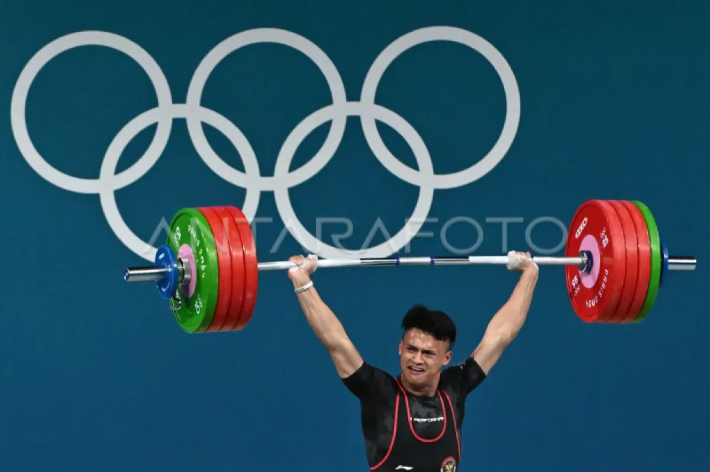
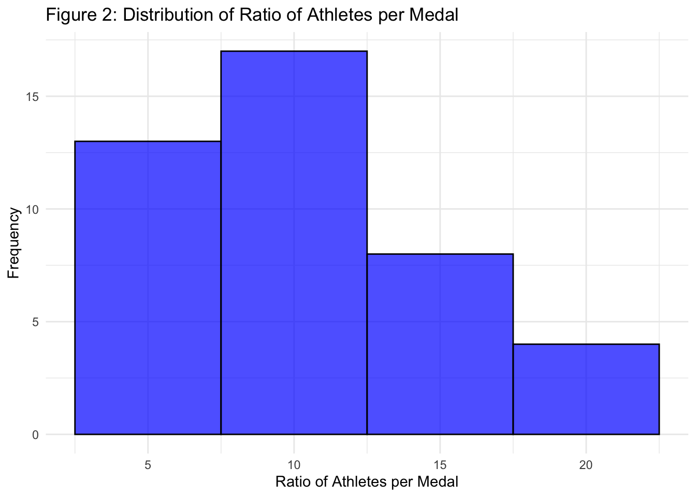

| Country | Number_of_Athletes | Gold | Silver | Bronze | Total | Ratio_Athletes_Per_Medal | ratio | |
|---|---|---|---|---|---|---|---|---|
| 41 | United States | 592 | 40 | 44 | 42 | 126 | 4.698413 | 0.2128378 |
| 7 | China | 388 | 40 | 27 | 24 | 91 | 4.263736 | 0.2345361 |
| 14 | Great Britain | 327 | 14 | 22 | 29 | 65 | 5.030769 | 0.1987768 |
| 11 | France | 573 | 16 | 26 | 22 | 64 | 8.953125 | 0.1116928 |
| 1 | Australia | 461 | 18 | 19 | 16 | 53 | 8.698113 | 0.1149675 |
| 23 | Japan | 403 | 20 | 12 | 13 | 45 | 8.955556 | 0.1116625 |

Rethinking Olympic Strategies: The Correlation Between Number of Athletes and Medal Counts
Problem Description
This report addresses the relationship between the number of athletes a country sends to the Olympics and its medal count. The analysis explores whether countries should shift their focus from rewarding medal-winning athletes through cash incentives to a more long-term strategy of increasing athlete participation, which could result in higher medal tallies.
Data Description
The data used in this analysis was sourced from the 2024 Summer Olympics medal table (Wikipedia, 2024). It includes variables for the total number of athletes a country sends, the number of gold, silver, and bronze medals won, and the overall medal count.
The dataset includes the following variables: Country, representing the name of each country; Athletes, indicating the number of athletes sent to the Olympics by each country; and Gold, Silver, and Bronze, which denote the number of medals won in each respective category. Additionally, the dataset includes Total_Medals, representing the total number of medals won by each country.
Data Cleaning Steps:
- Filtered the data to include only countries with at least one medal.
- Calculated the ratio of athletes per medal.
- Removed team sports from the analysis to avoid skewing results due to larger teams.
- Filled missing values for some countries’ athlete counts using historical data.
Analysis The relationship between the number of athletes and total medal counts was analyzed through both a table and a plot. The table provides a clear overview of the countries with their corresponding athlete counts and medals, while the plot visualizes the positive correlation between athletes and medal counts.
The correlation between the number of athletes and total medals is apparent in both Table 1 and Figure 1. Countries with more athletes generally win more medals, indicating that investing in a larger pool of athletes can lead to better Olympic performance.

Figure 2 further reinforces the idea that countries with fewer athletes per medal (i.e., a more efficient conversion of athletes into medals) are rare. Most countries see a significant correlation between the number of athletes sent and the number of medals won.
Conclusion
This analysis demonstrates that countries should focus on developing and sending more athletes to the Olympics rather than just incentivizing current medal winners. By broadening participation and investing in youth development, countries are likely to see improved long-term success in terms of medal counts. This strategy supports the idea that Olympic success is more attainable when countries expand their athlete base rather than focusing exclusively on a few high-profile athletes (CNBC, 2024).
Reference
- Wikipedia. (2024). 2024 Summer Olympics medal table.
- CNBC. (2024). Here’s how much athletes at the Paris Olympics earn for winning medals. Retrieved from CNBC
- R Core Team. (2024). R: A language and environment for statistical computing. R Foundation for Statistical Computing. https://www.R-project.org
- Wickham, H., & Henry, L. (2024). rvest: Easily web scrape data. https://cran.r-project.org/package=rvest
- Wickham, H. (2024). dplyr: A grammar of data manipulation. https://cran.r-project.org/package=dplyr
- Wickham, H. (2024). stringr: Simple, consistent string manipulation. https://cran.r-project.org/package=stringr
- Wickham, H. (2024). ggplot2: Create elegant data visualisations. https://cran.r-project.org/package=ggplot2
- OpenAI. (2024). ChatGPT: Language model for conversational AI. https://www.openai.com/chatgpt